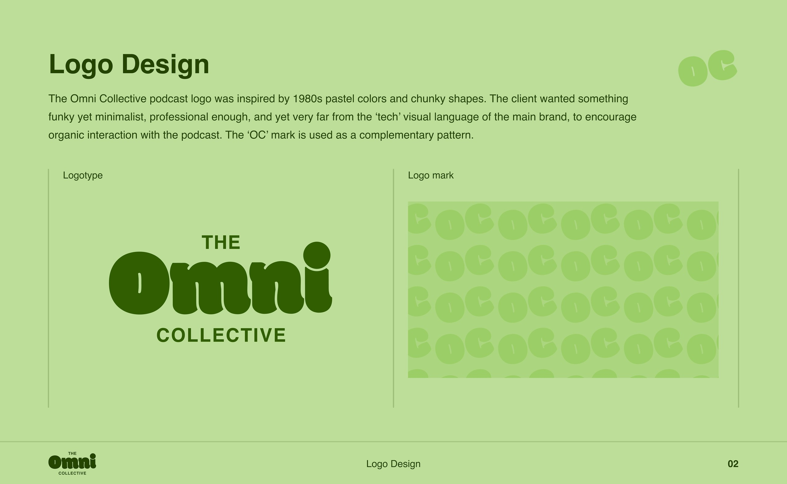
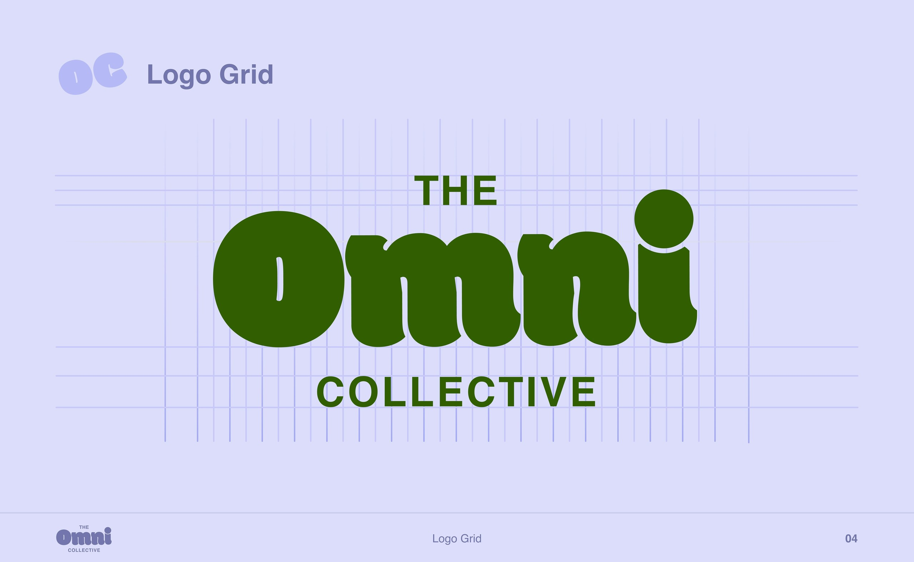
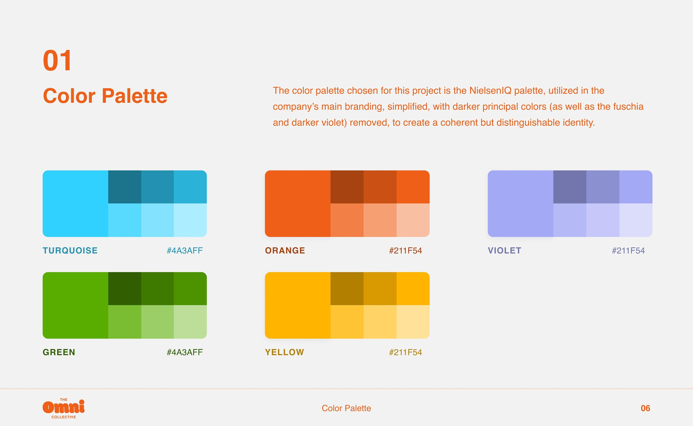
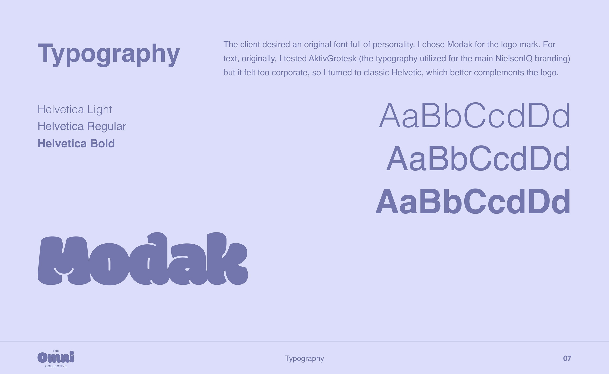
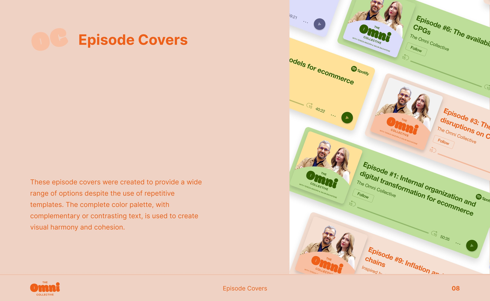
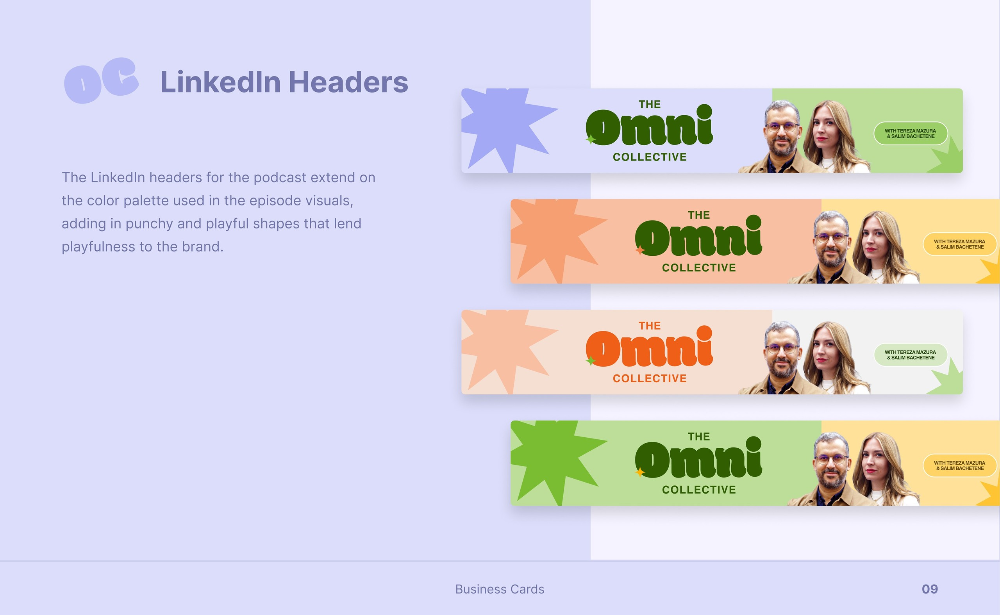

Étude de cas · Branding
The Omni Collective
L'identité du podcast de NIQ for Digital Commerce. Elle devait compléter la marque principale tout en s'en distinguant complètement.
- Client
- NIQ for Digital Commerce
- Année
- 2023
- Rôle
- Brand designer
- Outils
- Figma

Le brief
NIQ for Digital Commerce voulait que son podcast ait sa propre identité. Une marque à part rendait les posts moins corporate et moins proches d'un contenu sponsorisé, ce qui encourage davantage d'interactions organiques.
Les podcasts concurrents avaient un look austère et très classique. L'objectif : quelque chose qui se démarque du reste.
01
Trouver le logo
Itérations
Le brief était très ouvert, alors j'ai fait plusieurs allers-retours. Chaque première version était refusée parce qu'elle faisait trop corporate. Le nom, très long, rendait difficile de tout faire tenir dans un seul logotype.
J'ai fini par choisir une typo originale et décalée pour « Omni » et une linéale minimaliste pour le reste. Le monogramme « OC » sert aussi de motif répété et ludique.


02
Couleurs & typo
Palette & polices
La palette est une version simplifiée de celle de NIQ, sans les couleurs principales les plus foncées. Elle reste cohérente avec la marque mère tout en s'en distinguant nettement.
Modak donne sa personnalité au logo. Pour le texte, j'ai d'abord testé Aktiv Grotesk, issue de la marque principale, mais elle faisait trop corporate. Je suis donc passée à l'Helvetica classique, qui s'accorde mieux avec le logo.


03
En pratique
Templates
Les couvertures d'épisode utilisent toute la palette avec un texte complémentaire ou contrasté, et les bannières LinkedIn ajoutent des formes d'étoiles.


Process
J'ai conçu et rangé chaque élément dans Figma, des premières esquisses du logo aux visuels finaux.
Ce que j'en retiens
J'adore le résultat. Il a fallu du temps et beaucoup d'essais avec les parties prenantes pour trouver ce qu'elles voulaient, mais la marque finale produit exactement l'effet recherché.